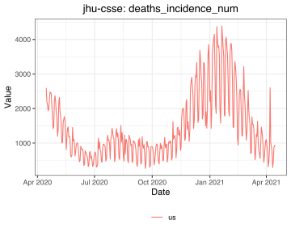

Provides R access to the COVIDcast Epidata API published by the Delphi group at Carnegie Mellon University. This API provides daily access to a range of COVID-related signals Delphi that builds and maintains, from sources like symptom surveys and medical claims data, and also standard signals that we simply mirror, like confirmed cases and deaths.
Fetching data in a data frame is as easy selecting the signal you want and then using covidcast_signal():
library(covidcast)
deaths <- covidcast_signal("jhu-csse", "deaths_incidence_num",
"2020-04-15", "2021-04-15",
geo_type = "nation")
plot(deaths, plot_type = "line")
The package supports convenient plotting and mapping tools, correlation analyses between signals, and various geographic utilities for working with counties, metropolitan areas, and other units.
Consult the COVIDcast Epidata API documentation for details on the data included in the API, licensing, and how to cite this data in your work. The signals documentation lists all the data sources and signals available through this API.
To get started using this package, view the Getting Started guide at vignette("covidcast").
Get updates
You should consider subscribing to the API mailing list to be notified of package updates, new data sources, corrections, and other updates.
Usage terms and citation
We request that if you use the covidcast package in your work, or use any of the data provided by the COVIDcast Epidata API, that you cite us appropriately:
Arnold T, Bien J, Brooks L, Colquhoun S, Farrow D, Grabman J, Maynard-Zhang P, Reinhart A, Tibshirani R (2023). covidcast: Client for Delphi’s COVIDcast Epidata API. R package version 0.4.5, https://cmu-delphi.github.io/covidcast/covidcastR/.
Reinhart A, Brooks L, Jahja M, Rumack A, Tang J, Agrawal S, Saeed WA, Arnold T, Basu A, Bien J, Cabrera ÁA, Chin A, Chua EJ, Clark B, Colquhoun S, DeFries N, Farrow DC, Forlizzi J, Grabman J, Gratzl S, Green A, Haff G, Han R, Harwood K, Hu AJ, Hyde R, Hyun S, Joshi A, Kim J, Kuznetsov A, La Motte-Kerr W, Lee YJ, Lee K, Lipton ZC, Liu MX, Mackey L, Mazaitis K, McDonald DJ, McGuinness P, Narasimhan B, O’Brien MP, Oliveira NL, Patil P, Perer A, Politsch CA, Rajanala S, Rucker D, Scott C, Shah NH, Shankar V, Sharpnack J, Shemetov D, Simon N, Smith BY, Srivastava V, Tan S, Tibshirani R, Tuzhilina E, Van Nortwick AK, Ventura V, Wasserman L, Weaver B, Weiss JC, Whitman S, Williams K, Rosenfeld R, Tibshirani RJ (2021). “An open repository of real-time COVID-19 indicators.” Proceedings of the National Academy of Sciences, 118(51). doi:10.1073/pnas.2111452118 https://doi.org/10.1073/pnas.2111452118.
See the COVIDcast Epidata licensing documentation for information about citing the datasets provided by the API.
Warning: If you use data from the COVIDcast API to power a product, dashboard, app, or other service, please download the data you need and store it centrally rather than making API requests for every user. Our server resources are limited and cannot support high-volume interactive use.
See also the COVIDcast Terms of Use, noting that the data is a research product and not warranted for a particular purpose.